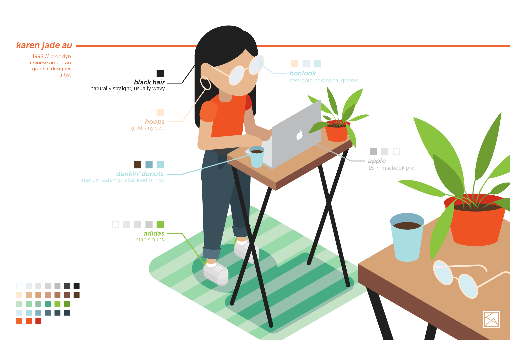
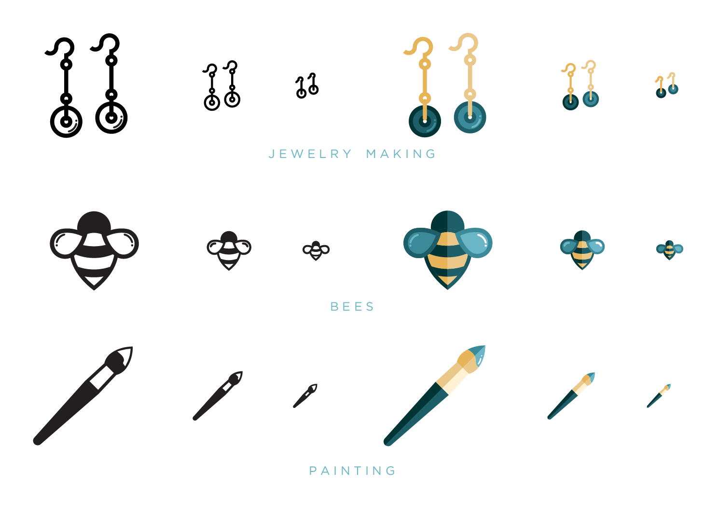

September 4, 2019
project one : personal isometric avatar

Our first project for the semester was to create an avatar in our likeness using an isometric grid. I struggled with making more organic forms on this grid, but I found a sequence of tranformations that would turn an object to fit the isometric grid (scale, shear and roate). After making a really basic figure, I added my own touches to make it look like me. This included my black hair, my new glasses, gold hoop earrings, my trusty adidas sneakers, a cup of coffee, and my 6 year old macbook.
October 7, 2019
project two : personal icons

Our second project required us to examine ourselves and identify three aspects to respresent us in three separate icons. The three icons I designed are: a pair of earrings, a bee and a paintbrush. A pair of earrings to represent my hobby of jewelry-making. A bee to represent my aspiration to beekeep one day. And a paintbrush to represent a media that's been prevalent in each stage of my life.
October 7, 2019
project four : infographic timeline